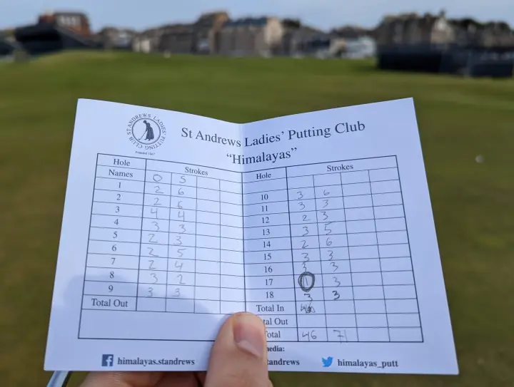

Importing Scores with AI
Instead of typing in every score by hand, you can take a photo of a scorecard and let Squabbit read the scores for you using AI. This works with physical paper scorecards as well as digital scorecard screens from golf simulators like GSPro.

How to import scores
Open the scorecard for your round and tap the menu. Select "Import scores from physical scorecard". You'll be prompted to take a photo or choose one from your gallery.

Once you submit the photo, Squabbit will process it using AI. This can take up to 30 seconds depending on the image.
Reviewing parsed scores
After processing, you'll see a preview of the scores that were read from the image. Each player's hole-by-hole scores are displayed in a table so you can verify everything looks right. Tap any individual score to correct it if the AI misread something.

Squabbit will try to match the names on the scorecard to the players in your round. If it can't find a match, it will ask you to either skip that player or manually pick the right person from the scorecard.
Tips for best results
- Make sure the scorecard is well-lit and the numbers are clearly visible.
- Try to capture the entire scorecard in one photo. The AI works best when it can see all the scores at once.
- For simulator screens, take a photo of your final scores on the screen. The AI can read digital text just as well as handwriting.
- Always review the parsed scores before confirming. This is a beta feature and the AI can occasionally misread a number.
Using this with simulator rounds
If you're playing on a simulator, this feature is a quick way to get your scores into Squabbit without entering them hole by hole. Just snap a photo of the final score screen on your simulator display and import it. If the round is part of a simulator tournament or league, it will automatically be counted as a simulator round.